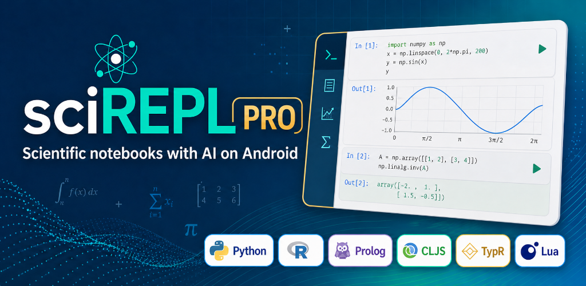

Mix languages by cell
Use Python, R, Prolog, TypR, Bash, JavaScript, Lua, and ClojureScript in the same workbook. A shared virtual filesystem helps results move between kernels.
AI-assisted scientific notebooks · Android
SciREPL Pro combines a multi-language notebook with an AI assistant that can build, run, and refine workbooks directly on your Android device.
Google Play release in preparation · Tester access available

One workbook, many tools
Move between numerical computing, statistics, logic, scripting, and generated code without splitting the work across separate apps.
Use Python, R, Prolog, TypR, Bash, JavaScript, Lua, and ClojureScript in the same workbook. A shared virtual filesystem helps results move between kernels.
Connect directly to a supported model provider with your own API key, or connect to a remote coding agent such as Codex or Claude Code through a broker you configure.
The model works in visible notebook cells. Review the assumptions, rerun the code, change a parameter, or replace any part of the analysis instead of accepting a sealed answer.
From prompt to evidence
Give the assistant a goal, constraints, and the kind of analysis you want.
With the permissions you select, the assistant can add cells, run kernels, inspect output, and revise its approach.
Every calculation remains visible and editable, ready for validation, sensitivity testing, or expert review.
Choose your edition
Free & open source
Use the multi-language notebook as a browser PWA or build the public Android app from source.
Android Pro edition
Add an integrated agent panel, more locally bundled runtimes, and optional remote-agent connections.
Local-first by design
Notebook runtimes execute on your device, and SciREPL Pro has no developer-operated account system, advertising, or analytics service.
AI and remote-agent features are optional. When you use them, the notebook context and tool results involved in your request can be sent to the provider or broker you choose. Provider charges and privacy terms apply separately.
Read the complete privacy policyHelp shape the release
Early testers can try the free and Pro editions while the Google Play release is being prepared.